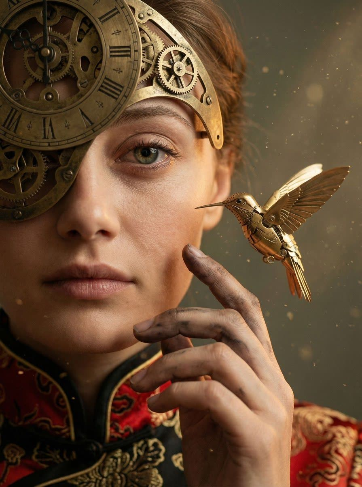

Mechanical Melancholy Macro Portrait Prompt
MOO-004MoodNano Banana Proby timedoctor.ethSeptember

A complex JSON-formatted prompt for Nano Banana Pro to generate an extreme close-up macro portrait of a melancholic prodigy with brass clockwork elements and a mechanical hummingbird.
Prompt
{
"vibe_title_en": "Mechanical Melancholy",
"master_prompt": "Extreme close-up macro portrait. The Protagonist as a melancholic prodigy, framed tight on one side of the face. A highly detailed, physical brass clockwork mechanism with Roman numerals curves over the forehead and brow like a fragmented visor, partially obscuring the upper head but leaving one deeply expressive, sorrowful eye visible. The eye reflects warm, dusty ambient light. The protagonist's fingers, stained with dark ink and graphite, are gently touching a hyper-realistic golden mechanical hummingbird hovering near their cheek. They wear a heavy, ornate red and black mandarin-collar jacket with gold embroidery. Warm, directional Rembrandt lighting cutting through dense, dust-filled air, illuminating floating motes. Shot on Hasselblad H6D-100c, 120mm macro lens at f/2.8, incredibly shallow depth of field blurring the background into a muted olive-grey. Kodak Portra 400 film emulation, hyper-detailed skin pores, physical weight to the metal, cinematic chiaroscuro, pure photographic surrealism.",
"meta": {
"intent": "Photographic Surrealism, Emotional Macro Portrait",
"priorities": "Micro-details, tactile realism, cinematic warm lighting, analog film texture",
"device_profile": "Hasselblad H6D-100c with 120mm Macro Lens"
},
"frame": {
"aspect": "3:4",
"composition": "Extreme close-up macro, focusing on one eye and the side of the face, filling the frame",
"layout": "Off-center focus on the visible eye, clockwork fading into deep bokeh at the top edge, fingers entering from the bottom frame",
"camera_angle": "Straight-on, intimate eye-level",
"tilt_roll_degrees": "0"
},
"subject": {
"gender": "Female",
"identity": "The Melancholic Prodigy",
"demographics": "Universal features, youthful yet burdened",
"face": "Pale, hyper-detailed skin pores, one eye visible showing intense sorrowful focus, upper half partially covered by a brass clock mechanism",
"hair": "Pulled back out of frame, out of focus",
"body": "Only shoulder and neck visible, clad in heavy structured fabric",
"expression": "Sorrowful focus, heavy emotional weight, internal melancholy",
"pose": "Head still, hands brought up near the face, ink-stained fingers delicately interacting with a small golden mechanical bird"
},
"wardrobe_accessories": {
"garments": [
{
"item": "Mandarin-collar jacket",
"material": "Thick woven brocade",
"color": "Deep crimson red and black",
"fit": "Structured, tailored"
}
],
"accessories": [
{
"item": "Fragmented clockwork visor with Roman numerals",
"color": "Aged brass and gold",
"material": "Machined metal, glass",
"brand_style": "Avant-garde horology, practical special effects"
},
{
"item": "Mechanical hummingbird",
"color": "Gold",
"material": "Polished brass and tiny gears",
"brand_style": "Artisan kinetic jewelry"
}
]
},
"environment": {
"setting": "An obscure, dusty horologist's workshop or prodigy's sanctuary",
"surfaces": "Soft, muted olive-grey background, entirely blurred out",
"depth": "Extremely shallow, blurring everything millimeters behind the focal plane of the iris",
"atmosphere": "Warm, heavy, dust-filled air with illuminated floating particles",
"lens_interaction": "Soft optical vignette, macro compression"
},
"lighting": {
"key": "Warm, directional Rembrandt light hitting the visible eye and cheek",
"fill": "Subtle silver bounce to retain shadow detail in the clockwork",
"rim": "Soft golden backlight highlighting the floating dust motes and edges of the mechanical bird",
"shadows": "Deep, cinematic chiaroscuro, rich blacks",
"color_temperature": "Warm (around 3200K - 4000K)",
"sensor_flare": "None, highly controlled studio lighting"
},
"camera": {
"lens_type": "Macro Prime",
"focal_length": "120mm",
"aperture": "f/2.8",
"focus": "Tack sharp on the iris of the visible eye and the ink-stained fingertips",
"sensor_format": "Medium Format",
"perspective_distortion": "Zero distortion, highly compressed"
},
"post_processing": {
"color": "Muted, rich jewel tones contrasting with warm brass and pale skin",
"tonality": "High contrast, filmic roll-off in highlights",
"texture": "Kodak Portra 400 grain, organic imperfections, microscopic skin texture",
"digital_sharpening": "None, pure optical sharpness",
"chromatic_aberration": "Very slight edge fringing on the brass gears due to macro lens characteristics"
},
"negative_specifications": [
"neon",
"digital painting",
"illustration",
"CGI",
"plastic skin",
"flat lighting",
"wide shot",
"full body",
"cliché coffee shop",
"modern office"
]
}Tags: macro, close-up, 35mm film, neon, portrait